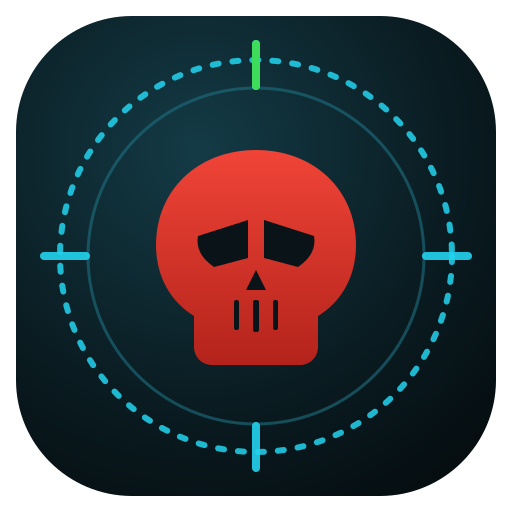
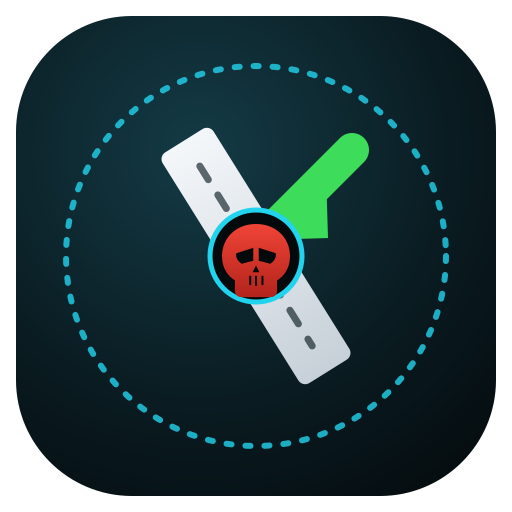
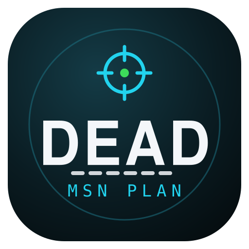
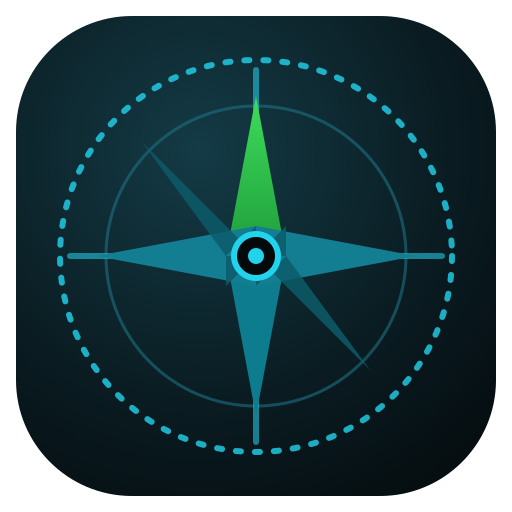

Four directions, all original artwork (no Marvel/Deadpool trademarked marks — generic geometric skull + targeting reticle, license-safe). Each is a single scalable .svg, shown here at app-icon (120px), 48, 32 and 16px, plus a browser-tab and light-background check. Pick one (or mix elements) and I'll wire it in as favicon.svg + PNG fallbacks and the web-app manifest icons.
The strongest "DEAD" read: original geometric skull dead-center in a dashed targeting reticle, north tick in green. Blends the current planner dial with the crosshair/skull reference.

Keeps the existing planner composition — dashed dial, angled runway, green approach arrow — but the waypoint at touchdown is a tiny skull in a cyan target ring. Most "mission-planning first."

Bold tactical wordmark with the "target dot + crosshair" as a crown and a dashed-runway underline. Great for splash/banner/large icon; the wordmark won't read at 16px (the crosshair carries it there).

The professional / SOF-clean route: no skull. A 4-point compass rose (north in green) fused with a crosshair and a center waypoint over the dashed dial. Reads cleanly at every size.

Licensing: none of these use Deadpool's logo, mask, or any Marvel asset. The skull is an original geometric silhouette and skulls/crosshairs aren't protectable on their own — only Deadpool's specific stylized mark is. The palette matches the current app (teal-black, cyan waypoints, green approach). Next: tell me the option (e.g. "go with 1") and I'll export favicon.svg, favicon-32/16.png, apple-touch-icon.png + maskable manifest icons and wire the <link> tags + manifest.webmanifest.